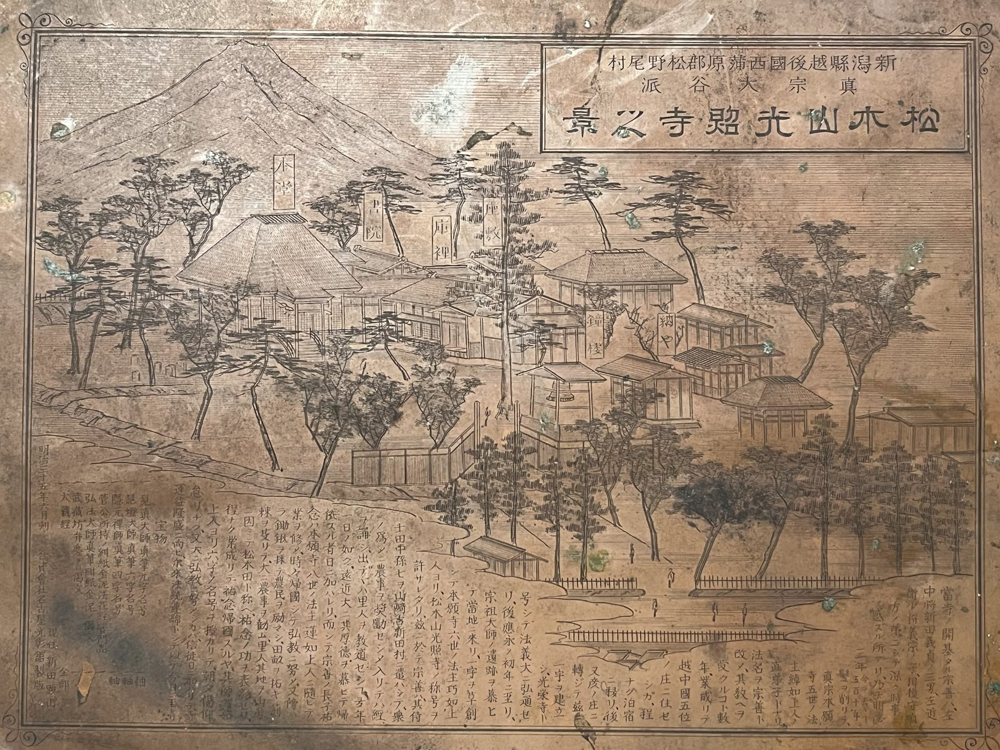

境内のご案内

本堂
緑青瓦の屋根が美しい本堂。春には桜が彩りを添えます。

内陣
金色に輝く荘厳な内陣。阿弥陀如来を御本尊としてお祀りしています。
―南北朝時代より続く念仏の法灯―
光照寺は、南北朝時代の明徳3年（1392年）に開かれて以来、六百年余りにわたって念仏の教えを伝えてきた真宗大谷派の寺院です。その由緒をご紹介いたします。
当寺の開基は新田宗善です。宗善は、新田義貞公の三男・左近衛少将義宗の子にあたります。「新田」という当寺の姓は、この新田家の血筋に由来すると伝えられています。
宗善は髪を剃って本願寺第五代・綽如上人の直弟子となり、法名を宗善と改めました。その教えを受けること数年、越中國（現在の富山県）五位の庄に住み、泊、彦ノ庄と移った後、明徳3年（1392年）に一宇を建立して「光榮寺」と号し、法義を大いに弘めました。
本願寺第六代・巧如上人の時代に、寺号を「光榮寺」から「光照寺」へと改めました。以来、六百年余りにわたりこの寺号を守り続けています。
その後、光照寺は越中から越後へと移り、五之上（現在の新潟市西蒲区）を経て、現在の松野尾の地に至りました。以来、松野尾の門徒とともに念仏の教えを伝えています。

版画「松木山光照寺之真景」（明治35年6月刻）。光照寺に現存する原版です。
明治35年、版画「松木山光照寺之真景」が制作されました。当時の光照寺の姿を今に伝える貴重な資料として、大切に保管されています。
昭和20年（1945年）、戦争のため光照寺の梵鐘・半鐘は供出を余儀なくされました。戦後33年を経た昭和53年（1978年）、ご門徒の力によって新しい梵鐘が鋳造され、鐘の音が再びこの地に還りました。
当時の住職・新田亥丸（雅号 孤亥）は、その想いを短歌に込めて梵鐘に刻みました。
こんたくの よにこそ ひひけ
たたかひゆ みそみとせへて
かへるこのかね
――混濁の世にこそ響け 戦いゆ みそみとせ経て 還るこの鐘。戦争のような混濁した世の中にこそ、澄んだ鐘の音が響き渡ってほしい。その願いは、今もこの鐘に刻まれています。
平成21年から26年にかけて本堂の改築工事が行われ、現在の本堂が整えられました。緑青瓦の屋根が美しい本堂は、地域の皆様とともに歩む光照寺の姿を今に伝えています。
明徳3年の開基から六百年余り。光照寺は時代の移り変わりの中で、変わらぬ念仏の教えを伝え続けてきました。
先人たちが守り伝えてきた法灯を大切にしながら、現代を生きる皆様の拠り所となる場でありたいと願っております。
緑青瓦の屋根が美しい本堂。春には桜が彩りを添えます。
金色に輝く荘厳な内陣。阿弥陀如来を御本尊としてお祀りしています。